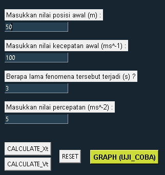

Untuk pertama kali saya mempelajari bahasa pemrograman, selalu terlintas kebingungan di dalam pikiran,
karena banyaknya bahasa pemrograman yang tersedia. Setelah saya mempertimbangkan semuanya itu, akhirnya
aku memutuskan untuk mempelajari python sebagai bahasa pemrograman pertama yang aku pelajari.
Terdapat alasan aku memutuskan untuk memilih bahasa itu, seperti kemudahan dalam menulis sintaksnya,
ramah untuk pemula, banyak diterapkan di berbagai bidang seperti IoT, machine-learning, dll..
Setelah mempelajari hal-hal mendasar python, aku pun berinisiatif untuk menerapkannya pada
pengembangan aplikasi desktop menggunakan library Tkinter sebagai portofolio pertama di bahasa
pemrograman Python.
Aplikasi yang saya kembangkan yaitu membuat program kinematika sederhana pada konsep mekanika
dalam ilmu fisika, tentunya menggunakan algoritma sederhana aritmetika di dalamnya serta konsep
dasar turunan untuk konversi fungsi jarak menjadi kecepatan dan percepatan.
Detail Setiap Komponen
Sebelum membahas secara detail mengenai setiap komponen-kompoonen
pada aplikasi program, saya menaruh satu video demonstrasi mengenai
penggunaan sederhana dari aplikasi tersebut. Selamat menonton :>
Gimana :>, biar makin paham sebenarnya program kinematika itu apa ya?
Di sini, kita harus mengenal konsep GLB dan GLBB pada fisika agar lebih
mudah dalam mengoperasikan program.
lebih lanjutnya bisa Anda cek di laman berikut:
Konsep Kinematika Fisika
1. Komponen Calculate X(t) dan V(t)

Pada gambar, terdapat 'CALCULATE X(t)' artinya kita hitung jarak akhir setelah
menempuh waktu tertentu - tentunya dengan satuan SI, apa saja yang bisa kita input
dari perhitungan tersebut? jika kita ketahui nilai posisi awal dan kecepatan awal, maka kita input semua
yang tertera di situ. Namun bisa kita input 0 pada posisi awal dan kecepatan awal.
Selain itu, terdapat 'CALCULATE V(t)' artinya kita hitung kecepatan akhir setelah
menempuh waktu tertentu, di sini kita tidak perlu input posisi awal karena
tidak dipengaruhi oleh posisi awalnya. Secara otomatis akan hitung nilai
v(t) meskipun tidak kita input posisi awalnya.
Perlu diperhatikan juga bahwa untuk input nilai pada keempat parameter di atas
harus dalam integer atau float (angka). Akan terdeteksi 'run time error' jika kita
masukkan selain format tersebut sebagaimana tertera pada gambar.
Setelah kalkulasi akan kita peroleh hasilnya sebagaimana pada gambar di bawah:
2. Komponen Grafik Kinematika
Selain mampu menghitung posisi dan kecepatan akhir, kita juga bisa simulasi
sebuah grafik fungsi kinematika terhadap waktu. Penjelasan mengenai grafik GLB maupun
GLBB dapat anda akses di sini:
Konsep Kinematika Fisika

Untuk akses fitur tersebut dapat Anda klik 'GRAPH (UJI_COBA)', kita dapat input nilai
koefisien a, b, dan c berupa integer atau float (angka) yang telah disediakan pada program.
Nantinya akan menghasilkan output berupa interpretasi grafik menggunakan library
Matplotlib,
adapun contohnya sebagaimana ditampilkan:
Pada grafik, terdapat informasi fungsi X(t), V(t), dan percepatan sesuai
dengan yang kita input sebelumnya. Anda juga dapat simpan hasil grafiknya
ke dalam format gambar pada tombol logo 'save'.
3. Source Code
Jika Anda ingin mencoba program kinematika yang telah saya buat, saya akan bagikan
melalui repository saya melalu layanan GithubPages, link tertera:
Download Source Code beserta file yang dibutuhkan pada program
Kesimpulan
Itulah program yang telah saya rancang menggunakan bahasa pemrograman Python? :>
kedepannya saya berencana untuk menambah banyak projek di website portofolio ini.
Terima kasih telah membaca dokumentasi sederhana saya. Semoga dengan projek ini
Anda semakin tertarik di dunia pemrograman. Thank you ~~ :>